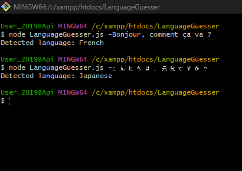

My Projects
Project 1 (PHP)

A simple blog managing system which allows you to create a blog and post it, edit and delete it.
Project 2 (node.js)
The Language Guesser project is a simple Node.js script that leverages the franc library to detect the language of a given text input. Whether you provide a phrase, sentence, or paragraph, the script analyzes the linguistic characteristics and attempts to identify the most likely language.